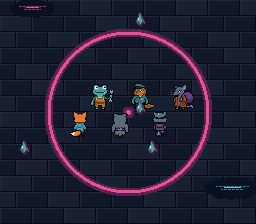

|
OpenSNES
Modern Open-Source SNES Development SDK
|
|
OpenSNES
Modern Open-Source SNES Development SDK
|

A square of the Rue basse seen from above, 512 × 448: seventeen data shards drift over the paving, six residents — Kit, a frog, an owl, a pangolin, a raccoon and a rat — pace up and down round the neon ring at its centre, and the D-pad scrolls a 256 × 224 view of it (BG1, a 64 × 64 map, scrolls with the camera). Every frame the example hands its world-space arrays to oamPlaceWorld(), once per batch: the call subtracts the camera, hides what is off screen, writes the OAM entries and the ninth x bit, and reports in visible[] which sprites it placed — the loop a scrolling game runs every frame, in assembly. The residents are sorted by depth and the batch's order says which resident each slot shows, the way a game seen from above sorts its actors; each faces the way it walks (its back turned going up).
| Button | Action |
|---|---|
| D-pad | Scroll the camera (and the paving), up to the kerb |
| Region | Content |
|---|---|
| $0000 | BG1 tilemap, 64 × 64 (four 32 × 32 pages, 8 KB) |
| $1000 | BG1 tiles: the square, 275 tiles (4bpp) |
| $4000 | OBJ tiles: twelve frames of the residents, then the shard (tile 192) |
| File | What it is |
|---|---|
| res/plaza.png | the square, 512 × 512: running-bond paving, the kerb and its cyan strip, the pink ring, manhole covers, puddles holding the neon |
| res/residents.png | the sheet, 128 px wide (one row of OBJ tiles): frame 2k resident k facing south, 2k + 1 facing north; the shard at the start of the fourth row |
| res/*.png.toml | the import settings (opensnes-tileset, opensnes-sprite); the build converts and links them |
The residents and the shard are Néo-Lumen art (PixelLab, CC0); the square is drawn by devtools/art_assets/build.py, which also lays out the sheet (assets/neo-lumen/README.md).
console, dma, background, sprite, input